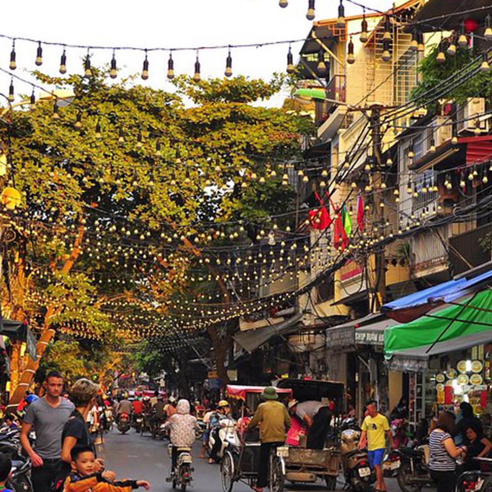
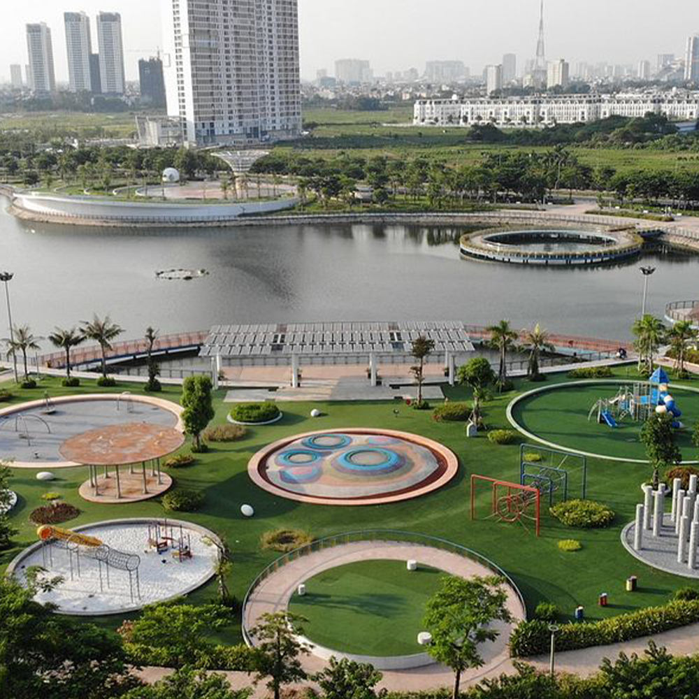

Dónde comer
Restaurantes, cafés y lugares donde disfrutar de la gastronomía tradicional de Hanoi
Ver másPortal oficial de turismo
Restaurantes, mercados y sabores para armar tu recorrido
Restaurantes, cafés y lugares donde disfrutar de la gastronomía tradicional de Hanoi
Ver másPho, bun cha y banh mi: los platos típicos que no te podés perder en la ciudad.
Ver más
Los espacios donde se mezclan las compras, la comida callejera y la cultura local.
Ver másTres cosas para resolver antes de hacer las maletas
Consulta los requisitos según tu nacionalidad y verifica la vigencia de tu pasaporte
El dong vietnamita es la moneda oficial. Cambia efectivo al llegar o lleva dolares
Taxis, apps de transporte y bicicletas son las formas más simples de recorrer la ciudad
Un recorrido audiovisual por sus calles, templos y mercados
Una postal de sus calles, templos y mmercados


Comentarios de quienes ya recorrieron Hanoi
Perderse por el Barrio Antiguo fue lo mejor del viaje, cada calle tiene un olor y un color distinto.
Marina Gómez, Argentina
La comida callejera superó cualquier expectativa. El bun cha de un puesto sin nombre fue lo mejor que comí en Asia.
Diego Ramírez, Colombia
El Templo de la Literatura al atardecer, con menos gente, es un lugar para quedarse en silencio un buen rato.
Sofía Andrade, Ecuador